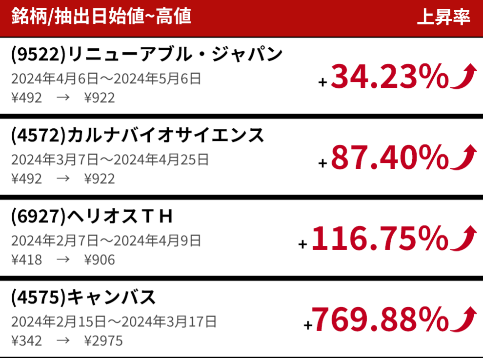

投資の世界において、人工知能は注目すべき分野となっています。AI株式は投資家に新たな機会を提供し、未来の投資戦略を再定義しています。

なぜAI株式を選ぶのか？
イノベーション主導
AI技術はビジネスの運営方法を変革し、多くの企業がこの技術を活用して成長を実現しています。これにより投資家には前例のない機会がもたらされています。
業界の多様性
医療から金融まで、AIは幅広く応用され、複数の業界に関わっています。これらの企業への投資は、投資ポートフォリオの多様化とリスク低減を意味します。
先見的な選択
バフェット氏が述べたように、長期的価値への注目が成功の鍵です。AI株式は強力な成長潜在力を示しており、注目に値します。

AI株式投資のメリット
-
データ駆動型洞察先進的なAI分析ツールを活用し、市場トレンドと投資機会の識別をサポートします。
-
リスク管理多様化されたAI株式への投資により、効果的にリスクを分散し、投資ポートフォリオのバランスを保つことができます。
-
未来志向AI技術と共に成長し、技術発展の恩恵を享受することができます。
私たちと共に探求しましょう